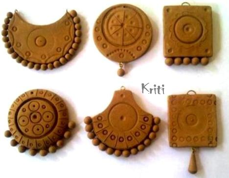
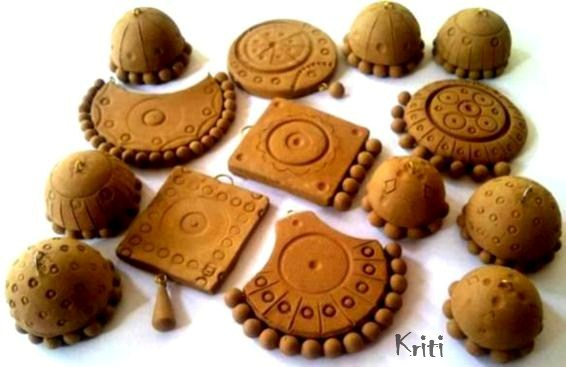
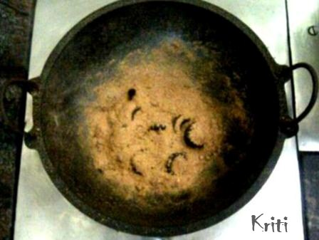
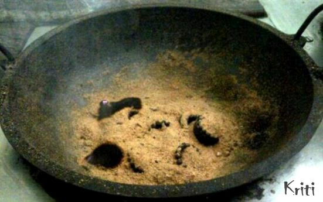
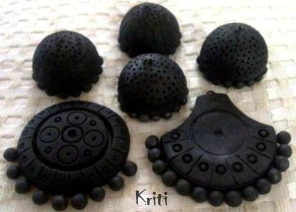
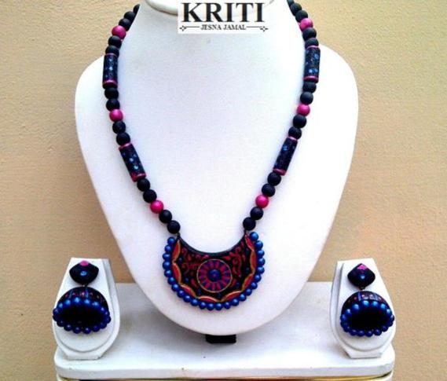

Welcome to the world of terracotta!
The terracotta clay can be bought from a local shop. The making process includes the following steps:
Preparation of clay is the initial step in making terracotta jewelry. Filtration of clay is often recommended to get pure clay free from dust and other particles. This you can do it by mixing clay with water. Add lot of water and just make a clay solution. The clay particles would settle down at the bottom after some time. Drain out the water from the top. It would help to wash off waste particles from clay. Repeat this few times until you get fine clay. Hope you know what is the ideal stage to make a jewelry. Just allow it to dry until it is flexible to mold. Next keep the clay on a flat surface and roll it out to remove the air inside. If you have air caught inside clay, there are chances to break the jewelry while baking. I just made few shapes out of clay. This is my first trial with clay. I was little tensed thinking of the outcome. To my surprise, I could make some pendants and Jumkas.  
There are several methods to bake terracotta clay. You may give your
jewelry to a kiln to fire. When terracotta is fired, it turn red in
color. But when you heat it under anaerobic conditions, the jewelry
turn black in color. As I do not have an oven at home, i thought of
baking it from home. It was my grandmother who told I can bake clay
using saw dust. This was actually a thrilling experiment and I was
eagerly waiting to see the outcome. I just took an iron pan and kept
it on fire. In order to bake the clay, you need to buy some saw dust
(wood dust). This you will get easily from any saw mill and is very
cheap. When the pan is hot, just put some saw dust and keep the
jewelry items above it. Then put some more saw dust over it.

The saw dust will start to burn at one point. Soon it will spread in
the pan.

This is how the
fire spreads inside the pan. Now you may put some more saw dust over
the burning saw dust. The jewelry will burn inside the dust. After
some time, put some more saw dust. You may be thinking this as a
time consuming process compared to electric heater and oven methods.
But I assure you this is quite easy If you are passionate about
crafting clay jewelry.

Cool the baked pieces of jewelley and pain them using the
metallic shades as per your needs.

Here is my first terracotta set. I was really happy with the outcome.